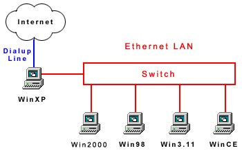

Internet Connection Sharing With All Things Windows
Al Wong
May 10, 2003
12/12/03 Update -
There appears to be a great deal of interest on this subject!
Due to the popularity of this particular webpage
(it's in the top five!),
I've decided to expand on the information given here previously.
There are now separate links to each version of Windows
explaining in detail how I connected that particular version to my network.
I include several more related links to networking.
There is more information about the WinXP server firewall.
I also include a Common Problems section at the bottom.
This is my Christmas present to the Web. Merry Christmas!
There is so much interest in this subject, I want to let people know
I am available for hire
if you need help in setting up your network.
I also have a wide variety of useful computer skills in programming and
setting up webpages.
Contact me.
This is my experience setting up an
ethernet
Local Area Network (LAN)
with the extra interesting feature of
Internet Connection Sharing (ICS) of a
dialup line!
I hope this description can help other people with the same
or similar problem. I am sure I am not the only person in this situation.
I had been wanting to do this for quite a while but did not have the
time until now.
I have many files spread out
between several computers and wanted to consolidate them together.
Transferring files back and forth via
sneakerware
or
infrared
is OK but,
if the files are large or many, it gets awkward. Also, it would be nice
to share the printer and have better access to other devices hanging off
my various computers.
Also, prices for
wired
ethernet components
have come down dramatically because of all the
wireless
stuff out there.
The last time I put together a LAN was in 1992 when network cards
were about $200 each. Now they are about $20 each.
I am using the
D-Link
LAN cards
(DFE-690TXD),
3Com
LAN cards
(3CXE589DT)
and the D-Link
switch
box
(DSS-5+).
My LAN consists of several machines with the following versions of Windows.
The links give more detailed descriptions on how to set up that particular
version of Windows so it works on the LAN:
According to the Windows XP (WinXP) help,
WinXP can support a local network with ICS
which can allow the other computers on the network to share
the Internet connection from the WinXP computer. This Internet connection can
be DSL, cable or dialup!
A conceptual diagram of my LAN is below.
|

This is what my network looks like conceptually
with all computers sharing the dialup line.
The dialup line is in
blue.
The ethernet components are in
red.
|
So I could share my dialup connection with the computers on my LAN.
I know it would be slow but so what?
It would still be neat.
:)
According to the WinXP help, all you had to do was connect up your network
hardware,
run the WinXP
Network Setup Wizard
on each of the computers on the network and
then it should all work. The WinXP computer will act as a server to the LAN,
doling out IP addresses and sharing the Internet connection.
Easy, right?
Well it was not easy!
After I connected all the machines, cables, adaptors,
switch
box and ran the
Network Setup Wizard
on the Windows XP and Windows 98 machines, they still would not
talk to each other.
It seems there's a lot taken for granted and I was getting incomplete
and/or bad advice from tech support and various websites.
The people at the Best Buy store (where I bought the D-Link LAN cards and switch box)
did not have a clue what I wanted to do (which, I suppose, isn't surprising).
They said sharing a dialup could not be done. Tech support at
D-Link
(the company that made
the LAN cards and the switch box) said they did not have any
experience in sharing a dialup!?
They were more helpful though. At least they pointed me to a few
websites that had more information.
The websites had incomplete/bad information as well.
What I found most surprising is that, although modems and dialups have existed
for years and years (at least the last 30 years),
no one had information
or experience on how to share a dialup connection!
However, for DSL,
which really has been available commercially only in the last 2-3 years,
people had all sorts of information about it! It was very weird.
I went to the
websites
(
www.wown.com,
www.practicallynetworked.com,
support.microsoft.com
)
suggested by D-Link tech support. Nothing in those websites
said anything about sharing a dialup.
The trouble shooter
sections were useless. Also, very little was said about the
hub
or
switch.
It was assumed you just plug it in and the network would work.
Well, it didn't!
After digging around several other websites
(
www.annoyances.org,
www.computing.net,
www.tek-tips.com,
www.911networks.com,
www.homenethelp.com
), I figured it out.
These are the additional things I had to do to each computer
to make them work
on the LAN.
The general steps are below.
The procedure to complete each step below is slightly different
depending on the version of Windows. Therefore, see the Windows help
for detailed explanations on how-to:
- Each computer must have a unique identification name
on the network. So the WinXP server can tell them apart.
- Each computer must have the same group name. This allows you
to share files and resources between machines on the LAN.
- Each computer must have the same network account.
You must set up an
account just for the network on each machine and they must all have the
exact same username and password.
With one exception, all computers must login to this account
in order to be recognized by the LAN.
I would suggest you create a separate user account just for the network
on each machine.
Make the network account on your WinXP server a limited account
and not an administrator account.
Please note the WinXP computer does not need to be logged into the network account at all but this account must exist for the benefit of the other computers on the LAN. All other computers must login to the network account to be recognized by the LAN.
- You need to
disable any third party firewall
software for the LAN,
especially on the WinXP server.
(I have found
ZoneAlarm
is too efficient for protection even if the
LAN IP addresses are in Trusted category and the firewall for Trusted
is turned off!)
When you set up ICS, the WinXP server
runs its own firewall against the Internet (if enabled).
Whether this firewall is effective or not
remains to be seen.
12/12/03 Update -
It is rumored the WinXP server firewall filters only
incoming
communications and
does not filter outgoing communications
(ZoneAlarm filters both ways).
So if you have any spy software
installed on your computer, tracking your surfing, you're screwed.
The WinXP firewall will not prevent any spy/tracking software
from sending outgoing details of your activities to unknown computers.
Of course, this is not desirable.
The only real solution is to delete/disable all spy software before
you use the WinXP server firewall.
The good news is there are free software available to home users to do this
like Ad-Aware and SpyBot.
I would also suggest scanning your computer with a good anti-virus program
as well.
02/25/04 Update -
It seems the WinXP server firewall filters only incoming communications
because the WinXP operating system periodically sends information about
your computer back
to Microsoft. There is some controversy about this as to the type and
quantity of information being sent and personal privacy issues.
Fortunately, the newer version of ZoneAlarm now filters LAN
communication correctly if you set it up right.
(Enter the LAN IP range of addresses into the Trusted category)
Since ZoneAlarm filters both incoming and outgoing communications,
I would now suggest disabling the WinXP server firewall and use ZoneAlarm
instead on each computer (if possible) on the LAN.
03/18/04 Update -
It seems ZoneAlarm is not reliably letting computers on the LAN
access the Internet. So now I have changed my mind again and suggest you
use the WinXP server firewall and not use ZoneAlarm. It appears
ZoneAlarm is too efficient and blocks everything.
- I also discovered that the WinXP administrator account must be
logged in for the ICS to work! The administrator does not need to initiate
the dialup connection. In fact, the administrator does not have to be the
current active account, just logged in.
If the administrator is logged off, the local network works
(i.e. you may share files and resources) but not ICS.
Microsoft should update their WinXP Help and Support.
The URLs the Help tries to access on
the Web are all broken now(!) That was frustrating.
It is preferable the WinXP server boots up first on the LAN as it's the DHCP
(Dynamic Host Configuration Protocol) server, which
passes out the IP addresses to the machines on the local network.
Common Problems
-
Slow file transfer.
Transferring files to a particular Windows 98 (Win98) machine
was very slow. Transferring a 3.5MB file file took several minutes while
transferring the same file to other Win98 machines on the LAN was very fast
(about 5 seconds!). The funny thing was the transfer of the
file FROM this Win98 machine was very fast while
tranferring files TO this Win98 machine
was very slow!
This is a fairly common problem. The answer is you need to enable
disk caching on the computer. Each version of Windows has a different
way of enabling disk caching
so see your Windows help or the
Microsoft support website.
-
Cannot See Other Computers on LAN.
Your computer on the LAN cannot ping or access shared files on other computers.
Other computers cannot see your computer.
There are many causes for this. The problem is if you make a tiny error
in setting up your network, the whole thing may fail to work properly.
On each computer, make sure the software driver for the network card
is properly installed and
each computer recognizes the network card is plugged in.
Make sure your network cables are plugged in properly. One end of the cable
goes into the network card on your computer. The other end of the cable goes
into the hub or switch. You would be surprised.
Does the Network Setup Wizard run on each computer (where appropriate)
without error?
Go through
the above list
and make sure each computer is set up properly.
Does each computer have a unique identification name, the same group name,
is logged onto the network, etc. ?
Also, you may need to disable any third party firewall software on the
WinXP server. The WinXP server runs it's own firewall against the Internet
(if enabled).
Use the
ipconfig
command in the
Command Prompt
to get the WinXP server to update the LAN IP address on your computer.
Use
ipconfig /?
to get help on this command.
-
Cannot Share Dialup Connection.
You can share files and resources on the LAN except for the dialup connection.
I have found that the administrator account must be logged in on the WinXP server
for the ICS to work. Note the administrator account does not have to be the
current active account. The administrator just needs to be logged in.
Also, you may need to disable any third party firewall software on the
WinXP server. The WinXP server runs it's own firewall against the Internet
(if enabled).
I am invincible! \o/
|